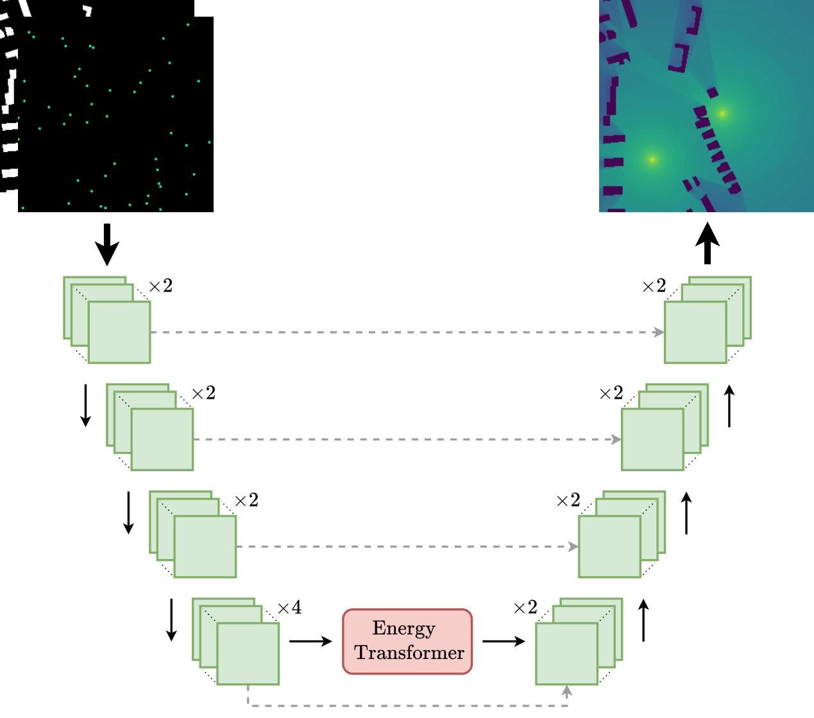
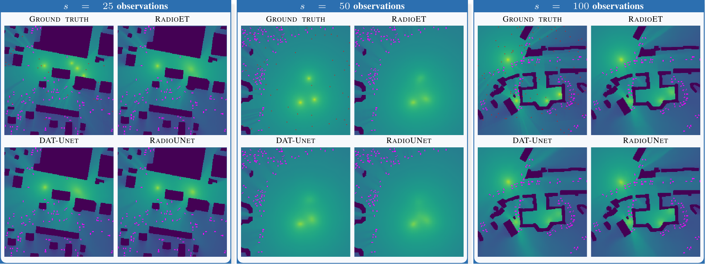
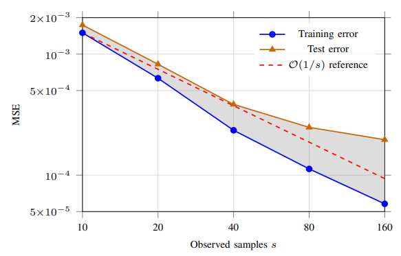

Figure 1
Architecture of RadioET.
1Department of Electrical and Computer Engineering, University of Illinois Chicago, Chicago, IL, USA 2DEVCOM U.S. Army Research Laboratory, Adelphi, MD, USA
Radio map estimation reconstructs quantities such as path loss or received signal strength across a geographic area from sparse measurements. We focus on the sampling-based setting, where target maps are estimated from sparse observations without access to the underlying transmitter realizations, and formulate this as a sparse reconstruction task for radio maps drawn from an underlying distribution.
Under regularity assumptions, we decompose the expected risk into an approximation term scaling as O(s−2/d) in the number of observed samples s, and an estimation term decaying as O((log n/n)1/2) in the number of training examples n. We then introduce RadioET, the first energy-based architecture for radio map estimation, and construct a multi-transmitter benchmark from RadioMapSeer. On this benchmark RadioET consistently outperforms existing models, with empirical sparsity scaling consistent with the O(1/s) reference rate in two dimensions.

Figure 1
Architecture of RadioET.

Figure 2
Qualitative multi-transmitter reconstructions.

Figure 3
Empirical sparsity scaling curves.
Click any figure to enlarge.